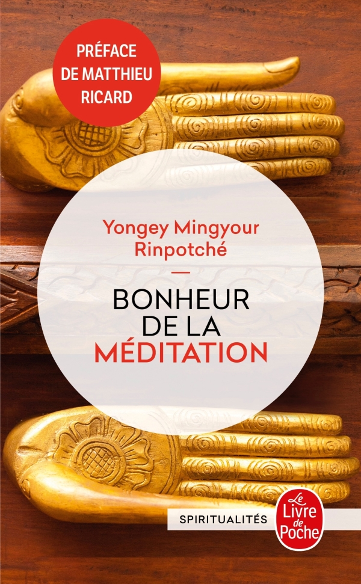
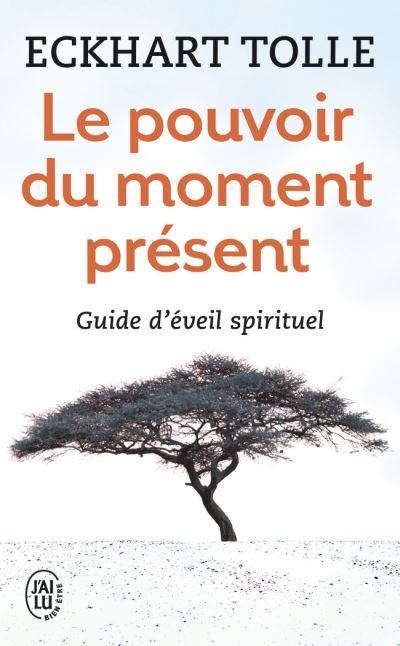

Change la couleur du fond de la page
Livres et inspirations
-

Dans cet ouvrage unique en son genre, Yongey Mingyour Rinpotché, un grand maître tibétain, révèle les bienfaits réels de la méditation, en établissant un pont entre les enseignements du bouddhisme et les découvertes les plus récentes de la science, et plus particulièrement des neurosciences.
L’auteur expose l’essence de cette tradition millénaire de façon entièrement nouvelle et adaptée aux particularités de notre culture moderne. Grâce à de nombreux exemples, il nous dévoile que de simples exercices quotidiens de méditation (au bureau, dans le métro ou même dans la rue !), consistant à laisser aller et venir nos pensées sans y attacher d’importance mais sans les rejeter non plus, peuvent changer notre vision du monde et répondre à nos préoccupations essentielles. -

Le pouvoir du moment présent est probablement l'un des livres les plus importants de notre époque. Son enseignement simple et néanmoins profond a aidé des millions de gens à travers le monde à trouver la paix intérieure et à se sentir plus épanouis dans leur vie.
Au coeur de cet enseignement se trouve la transformation de la conscience : en vivant dans l'instant présent, nous transcendons notre ego et accédons à un état de grâce, de légèreté et de bien-être.